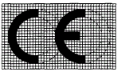

Die CE-Kennzeichnung besteht aus den Buchstaben "CE" mit folgendem Schriftbild:

Bei Verkleinerung oder Vergrößerung der CE-Kennzeichnung müssen die hier wiedergegebenen Proportionen gewahrt bleiben.
Die Bestandteile der CE-Kennzeichnung müssen annähernd gleich hoch sein; die Mindesthöhe beträgt 5 mm. Bei kleinen Maschinen kann diese Mindesthöhe unterschritten werden.
Die CE-Kennzeichnung ist in unmittelbarer Nähe der Angabe des Herstellers oder seines Bevollmächtigten anzubringen und in der gleichen Technik wie sie auszuführen.
Wenn das Verfahren der umfassenden Qualitätssicherung nach Artikel 12 Absatz 3 Buchstabe c bzw. Artikel 12 Absatz 4 Buchstabe b angewandt wurde, ist der CE-Kennzeichnung die Kennnummer der benannten Stelle anzufügen.